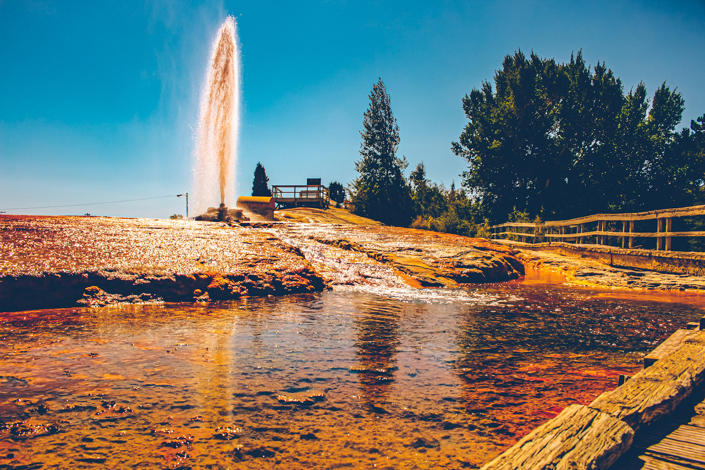

The Soda Springs Geyser
By Maricel Oyardo
Credits to Original Author:
Kathy Weiser
Located along a shortcut on the Oregon-California Trail off of the main route to Fort Hall,
Idaho is Soda Springs. These natural bubbling pools of carbonated water, caused by ancient volcanic activity,
were first called “Beer Springs”. Visited by local Indians, fur traders, and trappers prior to the days of the Oregon
Trail emigrations, the springs were rightfully considered to be one of the marvels of the overland trails.
At the time that pioneers were headed west for California and Oregon, there was an abundance of springs and water
in the area and it became known as the “Oregon Trail Oasis.”
Emigrants frequently took advantage of the hot water to wash clothes, bathing, and medicinal purposes, often
noting the continue to full article

 maricel.jesoro@gmail.com
maricel.jesoro@gmail.com +639 466664878
+639 466664878